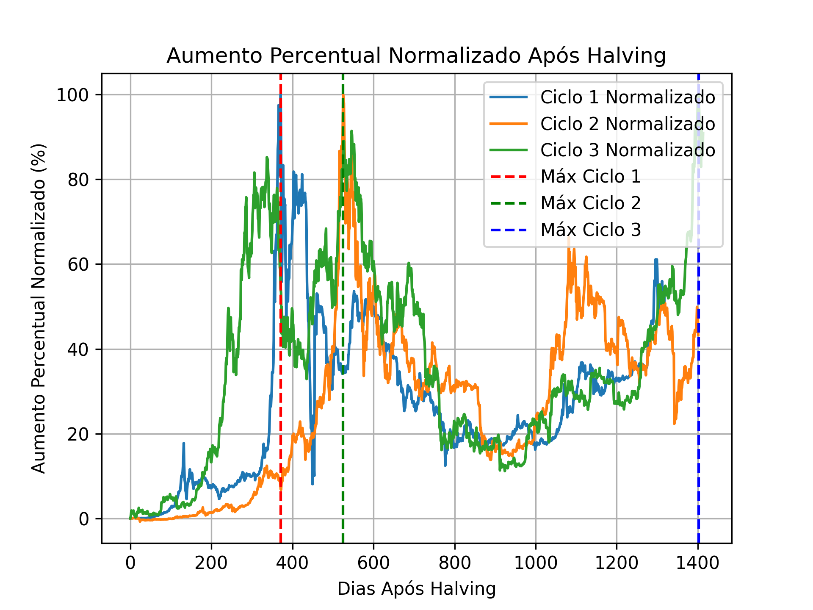

Hipótese: Quanto tempo após o halving ocorre o preço máximo no Bitcoin em cada ciclo?#
Introdução#
O Bitcoin passou por vários eventos de halving, que são momentos em que a recompensa por minerar novos blocos é reduzida pela metade acarretando em uma maior exposição na mídia, mudanças na oferta e demanada, e outros aspectos que acarretam na variação do preço deste criptoativo. Este relatório analisa quanto tempo após cada halving ocorre o preço máximo do Bitcoin, utilizando dados históricos de preços e o conceito de aumento percentual em relação ao preço inicial.
Objetivos#
Determinar o número de dias após cada halving em que o preço do Bitcoin atinge seu valor máximo.
Normalizar os ciclos de aumento percentual do preço após cada halving.
Parâmetros#
Conjunto de dados retirado de https://www.investing.com/crypto/bitcoin/historical-data
Desafios#
Leitura, filtro e limpeza do DataFrame de modo que o código continue sendo funcional para análises futuras.
Compartimentação do DataFrame em três períodos correspondentes aos três ciclos entre halvings a serem analizados.
Normalização da coluna “Price” tendo em vista que objetivo do projeto é realizar uma comparação eficiente sobre o crescimento relativo dentre cada período.
Junção dos três ciclos no DataFrame final para serem plotados no mesmo gráfico.
Bibliotecas utilizadas#
NumPy
Pandas
Matplotlib
Resultado#
Os dias correspondentes ao preço máximo após cada halving foram obtidos e representados no gráfico. As linhas verticais destacam os pontos de máximo para cada ciclo.
Ciclo 1#
Dias após halving para o preço máximo: 360 dias
Ciclo 2#
Dias após halving para o preço máximo: 510 dias
Ciclo 3#
Dias após halving para o preço máximo: 1400 dias
Conclusão#
Como observado no gráfico, os preços máximos nos ciclos 1 e 2 ficaram entre 300 e 550 dias após o halving e no ciclo 3: 1400 dias após o terceiro halving, ou seja, em um momento bem distante. Entretando, tal ciclo apresentou duas grandes altas - semelhantes ao seu máximo - por volta dos 350 e 600 dias. Portanto pela análise feita, este é o período em que o bitcoin costuma ter o seu valor maximizado geralmente salvo algumas exceções.
Arquivos utilizados#
Para rodar o código deve haver o DataFrame “Bitcoin Historical Data.csv” dentro da pasta data e as bibliotecas descritas acima devem estar instaladas.